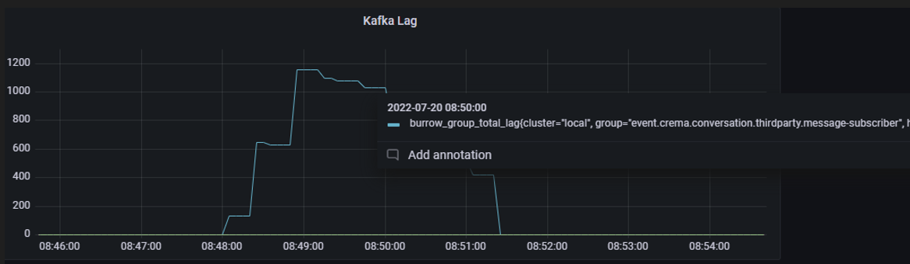
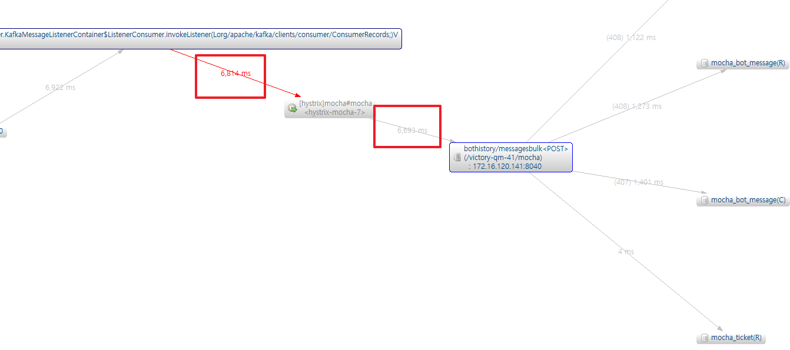
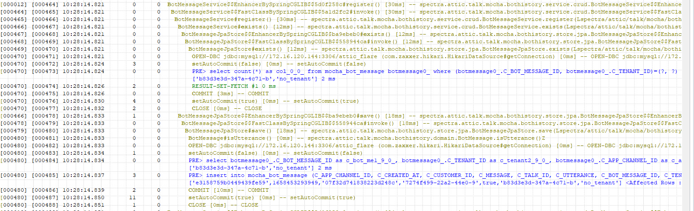
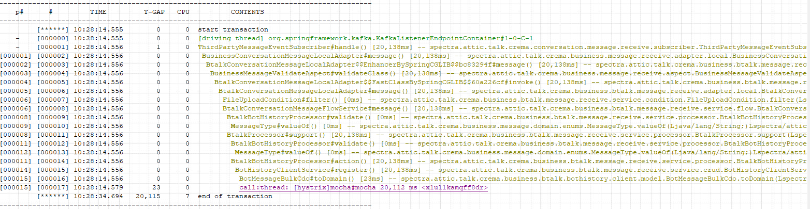
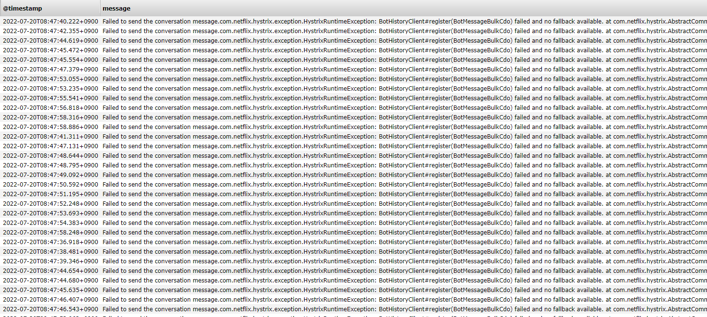

kafka consumer lag solved
2022, Aug 03
kafka lag
scenario
초당 10명이 동시 접수하면서 챗봇 이력을 200개를 대상으로 하는 테스트(발화주체별 200개로 총 400개의 리스트)
result
- kafka lag 발생
- transaction rollback error 발생
[kafka lag]
grafana

- burrow로 수집한 kafka lag 발생구간이다.
- lag이 발생한 부분은 챗봇 이력을 상담 어플리케이션으로 feign client를 통해 API를 호출하는 consumer 클래스다.
scouter

- flow
- A 어플리케이션에서
- kafka subscriber에서 챗봇메시지를 가공해서
- feign client 를 통해
- B 어플리케이션의 /bulk API를 호출
- B 어플리케이션에서
- requestmapping으로 받은 데이터를 store에 저장하고
- 다른 도메인의 정보갱신 호출
- A 어플리케이션에서
- 문제 1
- lag이 발생한 A어플리케이션에서 지연이 된 것이 아니라, B어플리케이션에서 초당 수백건의 데이터를 for문을 돌면서 DB에 하나씩 save시키고 있던 부분에서 지연 발생

- 문제 2
B 어플리케이션의 지연이 결국 feign을 통해서 동기호출한 부분까지 전파되어 subscribe까지 영향이 가서 lag이 발생

- 문제 3
- B 어플리케이션에서 save 한 후, 다른 도메인에 변경처리하는 부분에 runtimeException이 발생했는데 이 이 구간이 @Transaction으로 묶여있어서 앞서 save한 많은 건들이 rollback되고 있는 현상까지 발생
결국 rollback이 되면서 응답에 latency가 발생했고 그로인해 consumer영역까지 전파된 것으로 판단

solved
1. lag처리
- B어플리케이션을 호출하는 feign client를 비동기로 호출해서 해결했다.
- Feign client Async call에 따로 정리했다.
2. 다건에 대한 jpa store save로직 변경
- 한번에 400개의 봇메시지를 초당 20번씩 for문을 돌려서 find 한번 save한번을 호출하는 구조로 bulk용 API에 맞지 않다고 판단했다.
- save를 saveAll로 변경해서 배열자체를 한번에 저장시키는 것으로 변경했다. 이러면 트랜잭션도 하나로 묶이게 된다
- cache추가 : kafka lag과 상관없지만, 화면에서 자주 호출되는 find API를 위해 caching이 되도록 처리했다.
3. transaction 제거
- 프록시 되는 서비스에 트랜잭션이 걸려있어서, 다른 도메인에 변경 실패시 봇메시지 save한 데이터도 롤백되는 버그가 있었는데, 이 부분은 비지니스적으로도 트랜잭션으로 묶이 부분이 아니라서 제거했다.